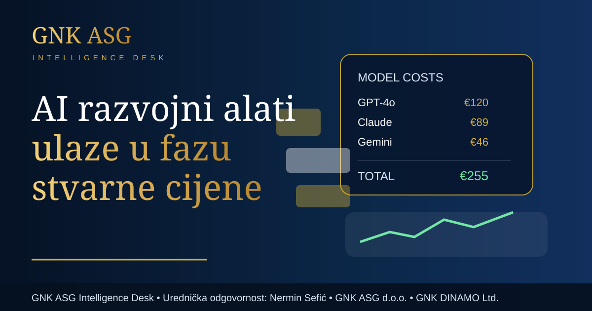

AI razvojni alati ulaze u fazu stvarne cijene
Promjene u naplati AI alata za programere pokazuju da umjetna inteligencija izlazi iz faze promocije i ulazi u fazu mjerljivog poslovnog troška. To je važna tema za svaku tvrtku koja planira digitalni razvoj.

Autor: GNK ASG Intelligence Desk · Urednička odgovornost: Nermin Sefić · Izdavač: GNK ASG d.o.o. · Javni sadržajni okvir: GNK DINAMO Ltd.
Urednička odgovornost: Nermin Sefić
Izdavač: GNK ASG d.o.o.
Okvir javnog sadržaja: GNK DINAMO Ltd.
AI alati za razvoj softvera u posljednje su dvije godine predstavljani kao gotovo neograničeno povećanje produktivnosti. Programeri brže pišu kod, timovi brže testiraju ideje, a tvrtke lakše automatiziraju ponavljajuće zadatke. No tržište sada ulazi u drugu fazu: pitanje više nije samo što AI može napraviti, nego koliko košta svaka korisna interakcija.
Javne objave međunarodnih tehnoloških medija o promjenama naplate GitHub Copilota pokazuju taj pomak. Kada se računa po tokenima, zahtjevima ili potrošnji računalne snage, AI prestaje biti samo pretplata i postaje varijabilni operativni trošak. To je bitna promjena za poduzeća jer se alat koji je ranije izgledao kao jednostavna mjesečna stavka pretvara u trošak koji ovisi o intenzitetu korištenja, modelu, veličini tima i načinu rada.
Za male timove to može biti prihvatljivo ako AI štedi vrijeme i smanjuje broj pogrešaka. Za velike organizacije, međutim, razlika između nekontroliranog korištenja i upravljanog korištenja može postati značajna. Ako stotine zaposlenika svakodnevno koriste AI alate, upravljanje limitima, budžetima i pravilima postaje dio digitalne kontrole troškova.
Ova tema važna je i za kvalitetu rada. Jeftin alat koji proizvodi previše pogrešaka može biti skuplji od skupljeg alata koji smanjuje vrijeme ispravaka. Zato tvrtke moraju uspoređivati ne samo cijenu pretplate, nego i vrijeme programera, sigurnosni rizik, kvalitetu koda, privatnost podataka i mogućnost nadzora nad rezultatima.
Najvažnija poslovna poruka jest da AI više nije dodatak koji se samo uključi. On postaje infrastruktura. A svaka infrastruktura traži pravila, budžet, odgovornost i mjerenje učinka. Tvrtke koje to shvate ranije imat će veću korist od umjetne inteligencije, jer će razlikovati stvarnu produktivnost od prividne automatizacije.